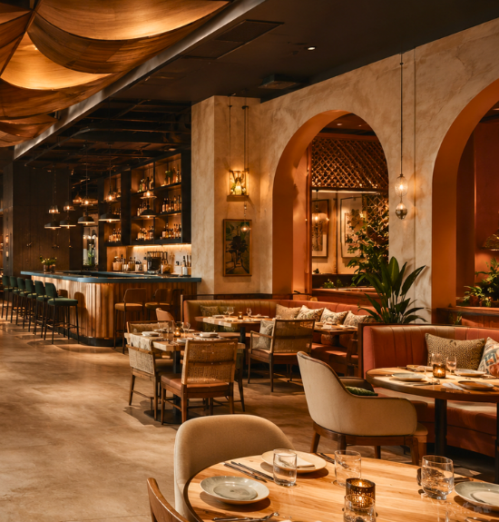
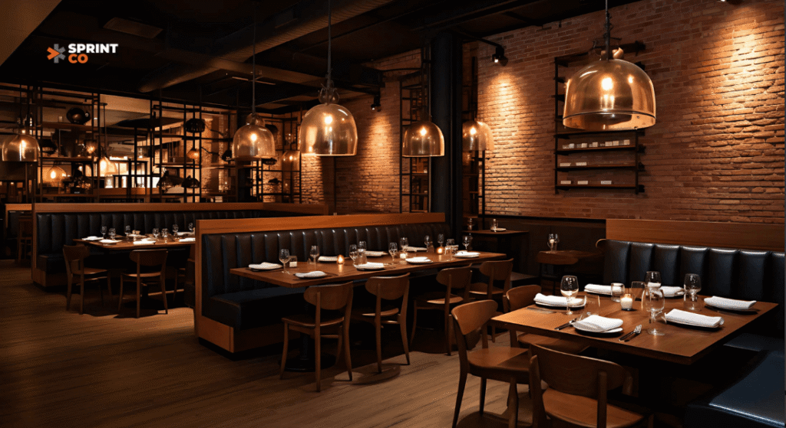
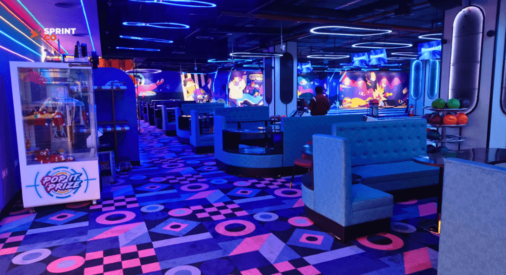
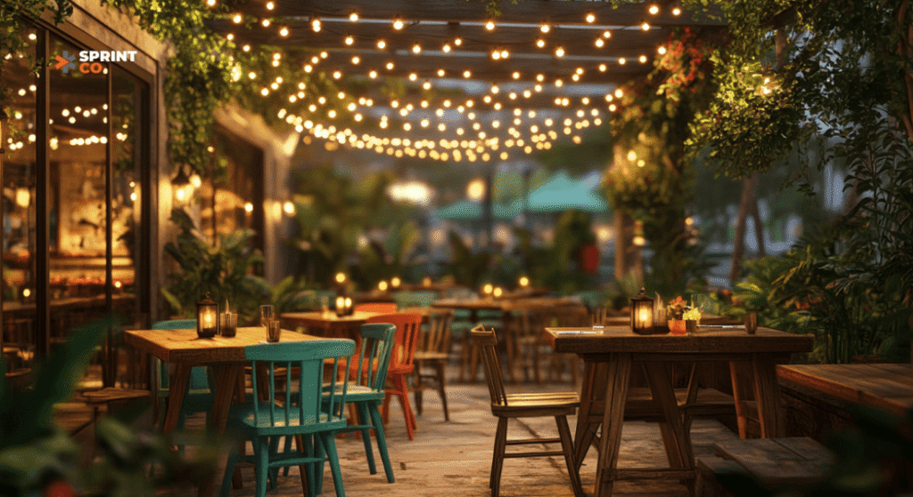
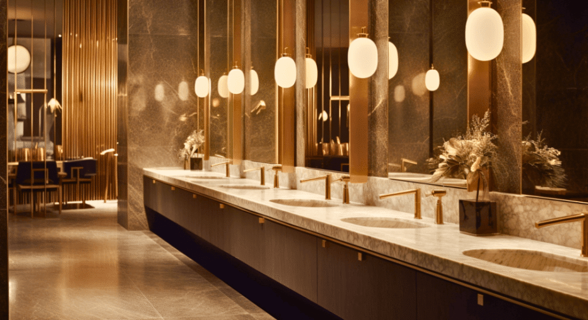

Remember the first time you walked into a restaurant and thought, This place just gets it? It wasn’t just the food, was it? It was the vibe, the details, the energy that made you want to linger a little longer. That’s where restaurant design is heading in 2025—spaces that do more than serve meals; they create lasting memories.
Across India, restaurants are transforming into destinations where bold aesthetics meet smart functionality. It’s not just about satisfying hunger; it’s about crafting stories that diners can Instagram, share, and keep coming back to.
So, what’s shaping the future of restaurant design in 2025? Let’s dig in.
Multi-Themed Spaces: A New Flavor Every Visit
Gone are the days when a restaurant had a singular theme. In 2025, restaurants will become chameleons, offering different vibes in one space.
Imagine a place where you can start with brunch in a tropical nook, sip cocktails in an industrial-chic lounge, and end your evening in a vintage-inspired dining room. These multi-themed spaces aren’t just clever—they’re genius. Customers come back, not just for the food, but to explore a new “chapter” of the restaurant each time.
What’s in it for you? Repeat visits. More Instagram-worthy moments. And a dining experience that feels fresh every time.
Micro Dining: Small Spaces, Big Impact

The rise of micro dining proves that small spaces can pack a big punch.
Imagine stepping into a cozy, 300 sq. ft. eatery where every square inch feels intentional—Bombay Daak, The Village Shop, and Sun and Moon are great examples. These compact spaces deliver high-quality food, drinks and unforgettable vibes in the most efficient way possible.
Why it works:
- Lower Costs: Reduced rent and lean operations lead to faster ROI.
- Unique Experiences: Micro-dining fosters intimate, Instagram-worthy moments.
- Scalable Models: Perfect for rapid expansion in dense urban landscapes.
The future of dining? Small, smart, and designed to leave a big impression.
Co-Branded Outlets: Kitchens That Work Harder
Why stop at serving one brand when you can serve several? Co-branded outlets are transforming restaurant real estate by turning offline kitchens into multi-brand hubs.
Take cues from pioneers like Maiz and Harvest, who’ve mastered the art of shared spaces. These kitchens operate efficiently, catering to multiple online brands and maximizing profitability.
Why it works: One kitchen. Multiple brands. Maximum returns.
Eatertainment: When Dining Meets Play

Eating out is no longer just about the food—it’s about the fun. Welcome to eatertainment: where dinner comes with a side of air hockey, VR gaming, or live performances.
Think of it as a place where friends gather not just to eat but to compete, laugh, and create memories. It’s the perfect recipe for diners who want more than a meal—they want an adventure.
Why it works: People crave experiences. And with social media amplifying every shared moment, eatertainment spaces become destinations that everyone’s talking about.
Instagram-Worthy Decor: Bolder Is Better
Here’s the thing about 2025: If it’s not on Instagram, did it even happen?
Restaurants are going all in with neon signs, bold wallpapers, and eye-popping patterns that make every corner photo-worthy. These designs aren’t just about aesthetics; they’re about marketing. Diners become your brand ambassadors, sharing your space with their followers—and doing your advertising for free.
Natural Elements: Bringing the Outdoors In

In 2025, we’re going back to nature—think rattan furniture, stoneware tableware, and earthy tones that make diners feel grounded and at ease. Add a vertical garden or some hanging plants, and you’ve got a space that feels refreshing and alive.
Why it works: It’s warm. It’s inviting. And it resonates with eco-conscious diners who want more than just good food—they want good vibes.
Whimsical Themes: A Local Twist
Imagine stepping into a restaurant that feels like a walk through Rajasthan’s vibrant bazaars or an homage to Kerala’s serene backwaters. Whimsical themes are all about creating experiences that transport diners to a different world.
Think colorful jharokhas, intricate mirror work, or décor inspired by Indian festivals like Durga Puja or Onam. These bold, imaginative designs don’t just create a space—they create a journey, offering diners a blend of nostalgia and discovery.
Why it works: Themes rooted in culture and storytelling resonate deeply, making your restaurant a must-visit for both locals and tourists.
Embedded Technology: Smart Spaces That Work for You
Tech is transforming dining spaces, and no, we’re not just talking about QR code menus. Imagine charging ports at every table, ordering tablets that let diners customize their meals, and Wi-Fi strong enough for work-from-café enthusiasts.
It’s not just about staying modern—it’s about making life easier for your customers. The easier you make it, the longer they’ll stay.
Statement Ceilings: Look Up!
Ceilings are no longer an afterthought. From intricate patterns and suspended plants to bold lighting installations, they’re becoming the unsung heroes of restaurant design.
What’s the takeaway? Every inch of your space should tell a story—even the ceiling.
Luxury Bathrooms: Because Details Matter

Let’s be honest: A restaurant can have great food, but a bad bathroom? That’s unforgettable—in the worst way.
In 2025, bathrooms are becoming a statement piece. Think marble walls, smart mirrors, touchless faucets, and lighting that feels more like a luxury spa than a public restroom. Because when you get the small things right, people notice.
Pro Tip: A great bathroom isn’t just functional; it’s a reflection of your brand.
What These Trends Mean for You
If you’re a restaurant owner, here’s the big picture:
- Customers Want More Than Food: They’re hungry for experiences, stories, and spaces that make them feel something.
- Bold Choices Win: Whether it’s eatertainment or neon decor, the bolder you go, the more you’ll stand out.
- Design Is Marketing: A great space isn’t just a place to eat—it’s a place people talk about, share, and remember.
Are You Ready for 2025?
At SprintCo, we don’t just design restaurants—we create stories. From multi-themed spaces to Instagram-worthy interiors, we help you turn trends into your competitive edge.
Let’s reimagine your space for the future. Contact us today and let’s build something extraordinary.